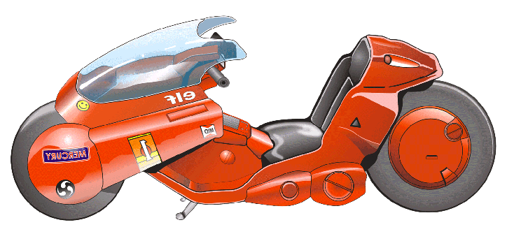

The bike Kaneda rides in both the Manga and Anime of Akira, commonly refered to as the
"Akira Bike".
- Computer Controlled Anti-Lock Brakes
- Auto-Navigation System
- Forward-Looking Radar
- CD Player
- Glove Compartment.
- Headlamp : 100w Neo Halogen Laser Light (can switch to fog lamp)
